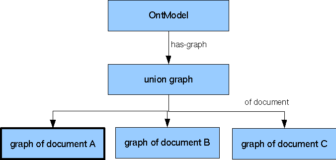

|
« previous (none) |
^ up (overview) |
(API classes) next » |
In OWL and DAML+OIL, an ontlogy serialised in RDF/XML can import
definitions from another document. This is achived with the
owl:imports property in OWL, and daml:imports
in DAML+OIL. Imports are processed recursively, so a document A that
imports document B, where B itself imports C, would normally be
expected to contain the declarations from both B and C after loading.
Imports are declared in a document as part of the Ontology node, that
provides meta-data about that ontology document. For example, in OWL:
<owl:Ontology rdf:about=””> <owl:imports rdf:about=”http://jena.hpl.hp.com/examples/example” /> </owl:Ontology>
or in DAML+OIL:
<daml:Ontology rdf:about=””> <daml:imports rdf:about=”http://jena.hpl.hp.com/examples/example” /> </daml:Ontology>
In Jena1, if a DAML ontology document was loaded, and imports processing was switched on (which was the default), the imported documents would be loaded automatically into the DAMLModel. This was convenient for simple applications, but suffered from a lack of flexibility. A particular issue was that all of the imported declarations were placed in one model. Thus, loading a model with imports processing turned on, making some changes and then writing the document out again would result in a serialisation of the entire imports closure. This is clearly not desireable, as it breaks the modularisation of the ontologies.
In Jena2 we have a different approach. An ontology model is assumed to have an underlying RDF graph that is a union of the graphs corresponding to each of the imported documents. Thus, if document A imports B and C, we have the following:

Figure1 Composition of union graphs for an OntModel
The union graph, that defines the contents of
the ontology model, presents a uniform view of the RDF statements
from any of the subsidiary component graphs. Thus a query or
listStatements on the model will return results from the
initial document, or any of its imports. Notice that one of the leaf
graphs is distinguished. This is the graph that will receive updates,
so any statements added to the model will automatically be made to
this writeable graph. By default, the writeable graph is the graph
corresponding to the initially loaded model, though this can be
changed by the user.
This explanation is provided to assist
Jena users to understand the underlying processes when an ontology is
loaded. For many uses, user code will not need to take any special
action to achieve robust handling of imported documents. Import
processing is handled automatically by the standard Model.read()
family of access methods. For more advanced uses, see below.
A common scenario when constructing modular ontologies is to re-use an ontology provided by another team, which is typically published on the WWW. Indeed, many of the proposed uses of the Semantic Web depend on this public sharing. Two factors inhibit direct access to web-readable ontologies: speed of access, and traversing firewalls. Firstly, when starting up an application, the delay in accessing a remote web site (which, in the limit, may even be inaccessible for a variety of reasons) can place an intolerable burden upon the users of the application. Secondly, for good reasons of information security, corporate and other institutional users are often protected from direct access to the WWW by a firewall. We would like to be able to gain the benefits of re-using published ontologies, without the need for access to the open Internet, and at acceptable speeds.
Jena2 has an Ontology Document Manager that provides a mechanism
for accessing locally stored copies of an ontology document via its
public URL. For example, suppose an application wants to re-use the
ontology published at http://jena.hpl.hp.com/examples/ex.
The developer has downloaded from the Jena team web site a copy of
the ontology, and stored it locally as file:downloads/jena/ex.owl.
To inform the document manager that it should load this local copy,
in place of the public URL, the following is added to an RDF
configuration file:
<OntologySpec>
<publicURI rdf:resource="http://jena.hpl.hp.com/examples/ex" />
<altURL rdf:resource="file:downloads/jena/ex.owl" />
<language rdf:resource="http://www.w3.org/2002/07/owl" />
</OntologySpec>The RDF file containing this and other configations is searched for along a path given to the OntDocumentManager class. By default, this path is:
etc/ont-policy.rdf;./ont-policy.rdf
but this can be changed easily by user code.
For convenience, a single global document manager is accessible by
calling OntDocumentManager.getInstance(). However, the
document manager is not a singleton, and individual instances of it
may be created and passed to the OntModel constructor via the
ModelFactory.
Each ontology model is bound to a document manager. By default, they will all share a reference to the global default ontology manager (see above). The document manager provides additional facilities for fine-grain control over the imports process.
|
Document Manager Method |
Explanation |
|---|---|
|
|
Get or set a flag to control whether imports are processed at all |
|
|
Get or set a flag to control whether the association between a document URI and the resulting graph is recorded. If set, subsequent loading of that document URI will return the cached graph. This potentially speeds up the importing of complex sets of ontologies, against the standard risks that caches become stale. |
|
|
Get the cached graph for the given URI, if known, or null if not. |
As noted above, a key problem with imports handling in Jena1 was the aggregation of all imported data into one model. Jena2 solves this by using a union of individual graphs to hold the imported statements. The following code sample shows how to load a model, update it, and write out only the changed portion.
// first create a default model OntModel m = ModelFactory.createOntologyModel(); // now read the document in; will also load imports m.read( “http://example.com/ontologies/eg” ); // add a statement to the updateable model m.addStatement( s, p, 42 ); // write the portion of the model that has changed m.getWriter().write( m.getBaseGraph() ); // TODO check this